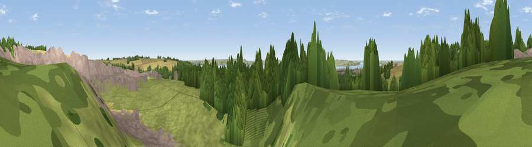

Viewpoint near Welton
#28870 in England · top 54% of its area beats it · near WeltonThe view, rendered

A 360° render of this exact spot computed from the terrain model, tree cover and land cover — summer colours, afternoon light, calibrated against photographs of famous viewpoints. Real trees, hedges and buildings will differ in detail.
The panorama
Grey silhouette: terrain skyline in each direction (720 bearings, Earth curvature and refraction included). Dashed green: skyline with trees (+15 m) and buildings (+8 m) as obstacles. Blue strip: how far the ground is visible on each bearing.
Where the view opens
Wedge length = distance to the farthest visible ground on that bearing (vegetation-aware). Rings at 10, 25 and 50 km.
What fills the view
34% grassland · 32% woodland · 17% cropland · 13% built-up · 3% water ·
Angular shares of the visible panorama (visual magnitude), not map area. Landscape diversity 0.63 (0–1 Shannon).
Key numbers
More beautiful places nearby
The staircase of upgrades: each row has a higher view potential than everything closer. Driving times are estimates from straight-line distance, calibrated against real road routing — check an actual route before setting out.
| Place | Direction | Drive | Score |
|---|---|---|---|
| Viewpoint near Welton | N · 0 km | ~1 min | 51.1 |
| Viewpoint near South Cave | NW · 6 km | ~13 min | 60.9 |
| Viewpoint near South Newbald | NNW · 7 km | ~15 min | 62.3 |
| Viewpoint near South Newbald | NW · 7 km | ~15 min | 64.9 |
| Viewpoint near Nunburnholme | NNW · 22 km | ~37 min | 68.5 |
| Viewpoint near Millington | NNW · 30 km | ~47 min | 69.7 |
| Viewpoint near Bishop Wilton | NNW · 31 km | ~49 min | 71.5 |
| Garrowby Hill (A166 crest) | NNW · 33 km | ~51 min | 71.9 |
53.73833, -0.53733 · source: screening · position refined by local search. Computed location — check access rights before visiting.